Este apartado es un recurso disponible para obtener respuestas rápidas y claras sobre la plataforma. Seleccione una opción de la lista de preguntas frecuentes. Si es un cliente nuevo, le recomendamos revisar los siguientes apartados para utilizar la plataforma de manera eficiente.
Viajes/Misiones
¿Cómo crear una misión?
Siga estos pasos para crear una nueva misión:
-
Seleccione el ícono de la sección "Misiones". 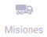
-
Haga clic en el botón de "Nueva misión".
-
En el recuadro que aparece, seleccione la opción "Crear desde cero".
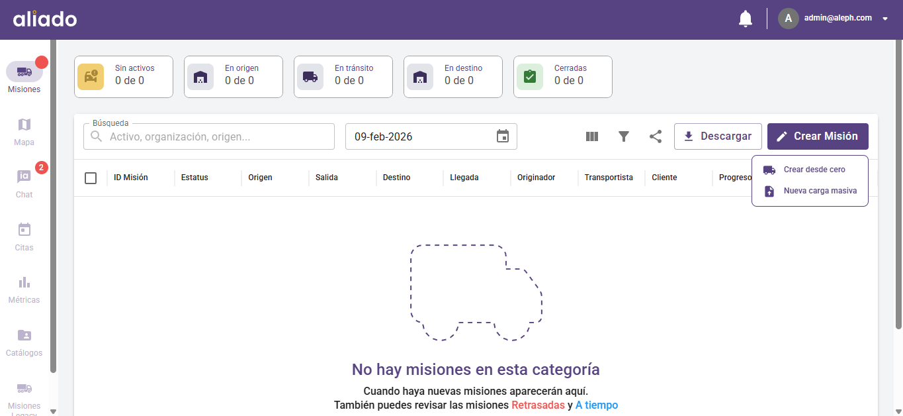
Nota: Si desea crear una misión por carga masiva, haga clic aquí.
Definición de Ruta
-
En la sección "Ruta de la misión", seleccione "punto de origen".
-
Complete los campos para el punto de partida (inicio del viaje):
- Agregue la Ubicación de partida.
- Seleccione la Hora y fecha estimada para el inicio del viaje.
-
Una vez llenados todos los campos, el botón "Guardar" se habilitará. Haga clic en él.
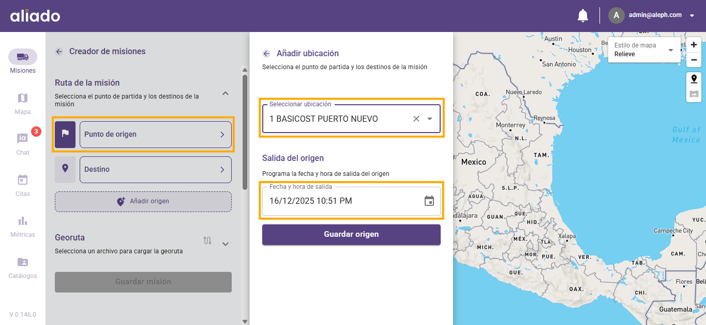 -
Añada su primer destino eligiendo la sección Destino, siguiendo el mismo proceso que el punto de partida.
Una vez añadido el primer destino, si desea agregar más paradas, tendrá que seleccionar "Añadir destino", podrá asignar los destinos necesarios.
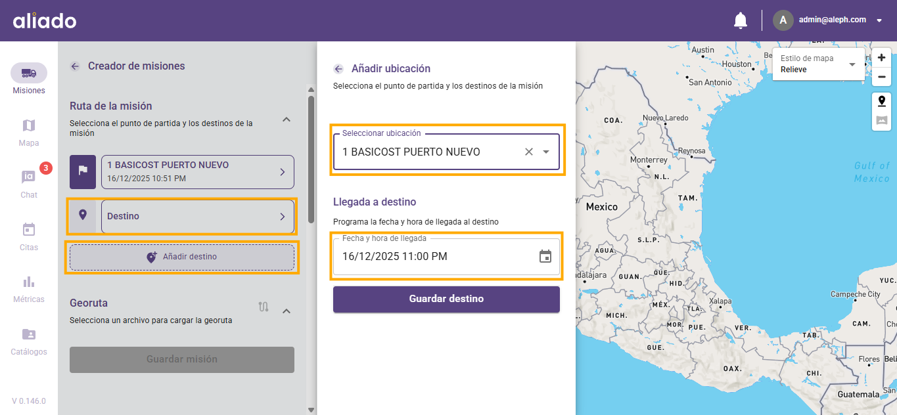
Geo Ruta
- Añada la Geo Ruta en su sección, tendrá que dar clic en subir archico archivos permitidos (.kml, .geojson) 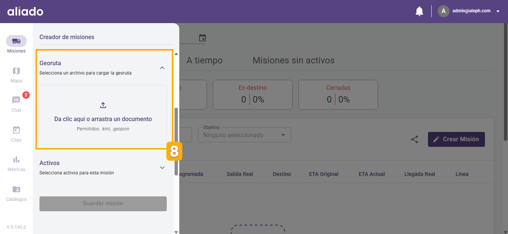
Asignación de Recursos y Finalización
- Añada los Activos requeridos para la misión, seleccionando el botón Añadir activos Tendrá que asignar la organización a la que pertenece y su tipo de activo, ya que los asigno se habilitrá el botón Guardar activo 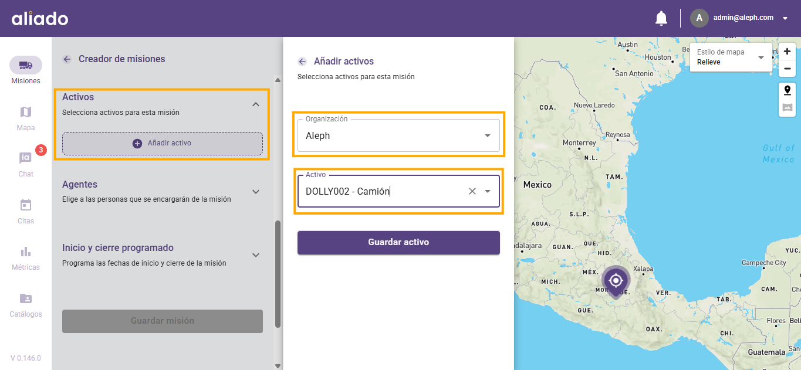
- Añada los Agentes (personal) que se encargara de la misión.
Seleccionará la empresa a la que pertenece y el nombre del agente(el botón "Guardar" se habilita al llenar los campos).
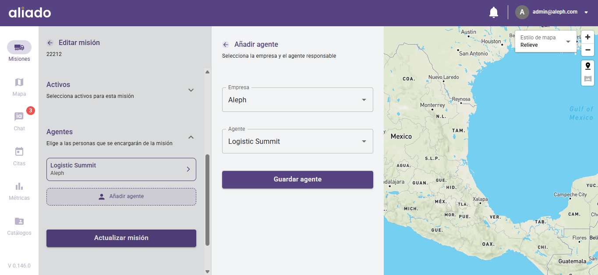 -
Establezca el Inicio y el Cierre programados para la misión.
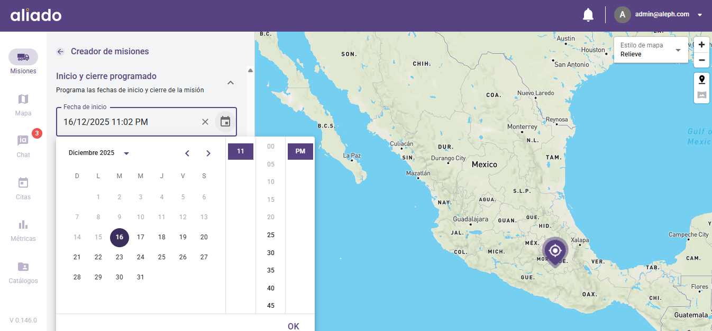 -
Agregue un ID (Número único) para identificar y facilitar la búsqueda de su misión.
-
Una vez agregado el ID, el botón "Guardar" se habilitará. Haga clic para finalizar y dejar su misión lista.

También podría interesarle: Iniciar Misión | Editar Misión | Cerrar Misión | Crear misión de carga Masiva
¿Cómo editar una misión ya creada?
Si necesita cambiar algún punto de partida, añadir destinos, activos, agentes o el inicio y cierre programado de la misión, siga estos pasos:
-
Ubique su misión. Puede buscarla en el recuadro "Búsqueda" ingresando el ID de la misión, la organización o el origen.
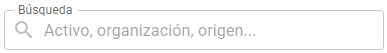 -
Una vez ubicada, acerque el cursor a la misión para habilitar los íconos de acción y seleccione el ícono de Editar.
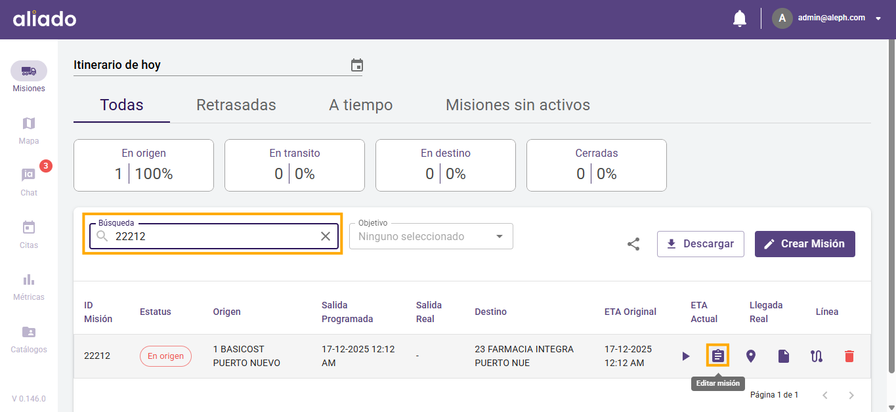 -
Se mostrará la sección "Editar misión". Aquí podrá elegir la opción específica que requiera modificar.
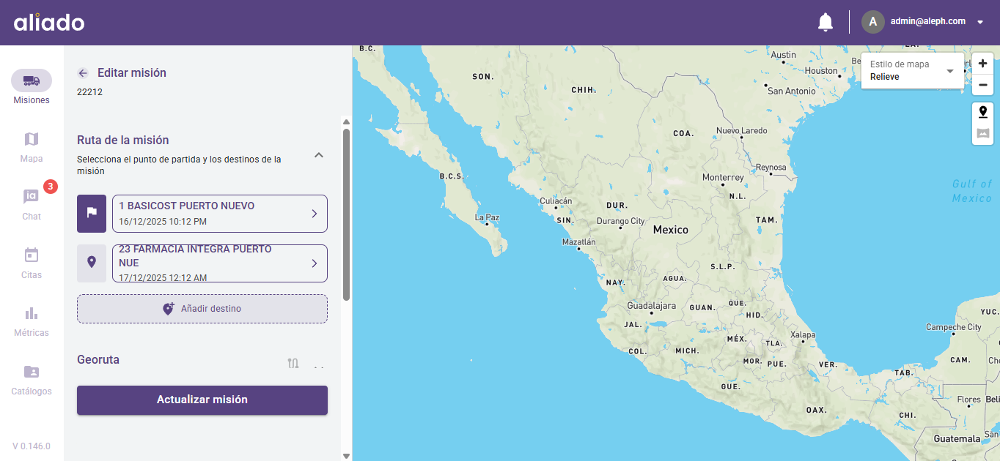
Modificación de Puntos y Destinos
-
Para modificar el punto de partida: Acerque el cursor al punto ya agregado y seleccione la flecha para abrir las opciones de edición.
-
Realice los cambios necesarios:
- Para cambiar la ubicación, seleccione el nuevo punto requerido.
- Para cambiar el horario, seleccione "Fecha y hora nueva".
Nota: Si sólo desea añadir un nuevo destino selesccione Añadir destino
-
Una vez terminadas las modificaciones, haga clic en el botón "Guardar origen".
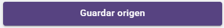 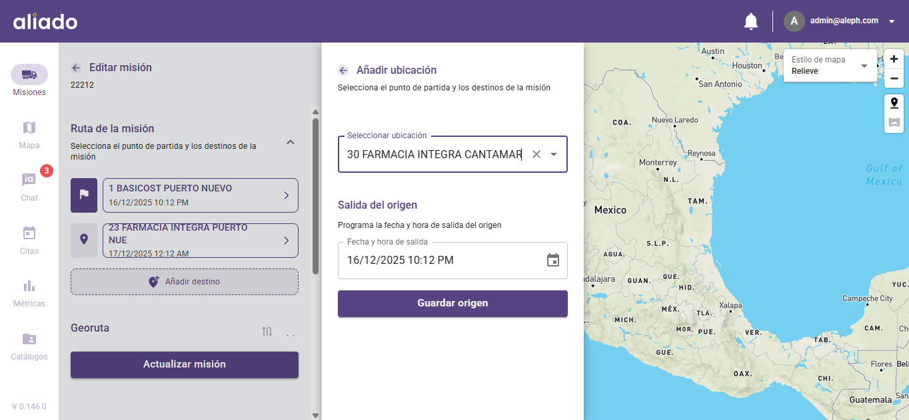 - Para editar la Geo Ruta, tendrá que eliminar el archivo que había subido anterior mente y seleccionar su nuevo documento, los archico archivos permitidos (.kml, .geojson) 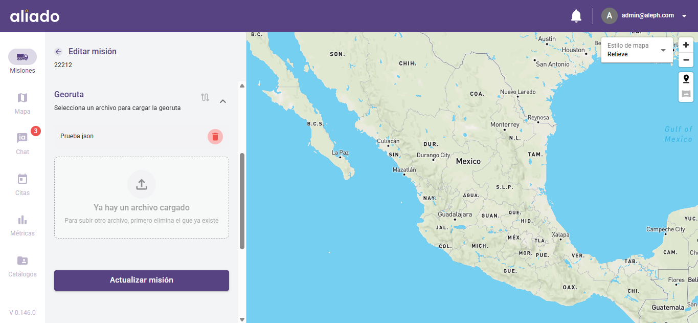
-
Para añadir/cambiar un activo: Seleccione el botón "Añadir activo" o seleccione la flecha que aparece al acercar el cursor al activo guardado anteriormente, para abrir las opciones de editar el activo.
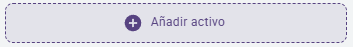Indique la organización, seleccione el activo y haga clic en "Guardar activo".
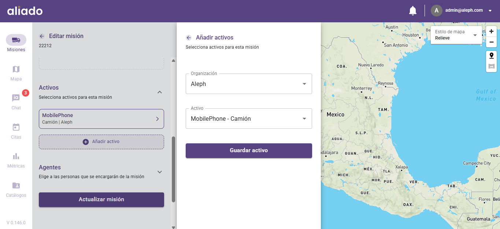Si desea eliminar el activo, tendrá que sleccionar la x que sale al acercar el cursor al activo ya existente
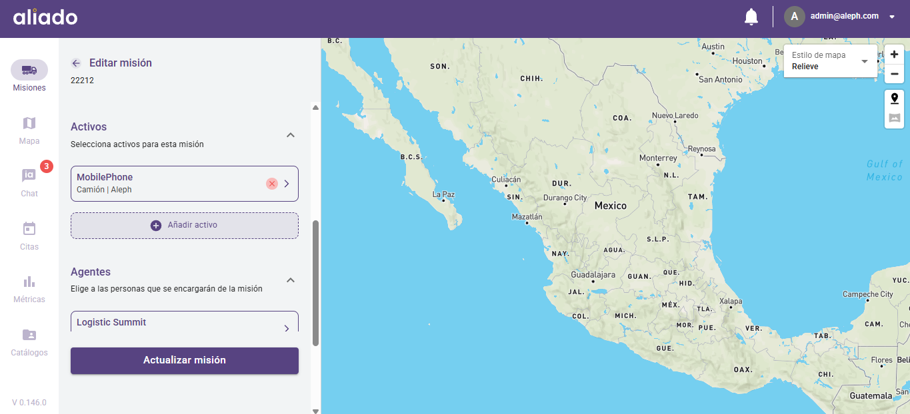 -
Para añadir/modificar un agente: Diríjase a la sección "Añadir Agente"o seleccione nuevamente la flecha que aparece al acercar el cursor al agente ya existente.
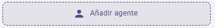Seleccione la organización, asigne al agente y haga clic en "Guardar agente".
Si desea eliminar el agente, tendrá que sleccionar la x que sale al acercar el cursor al activo ya existente
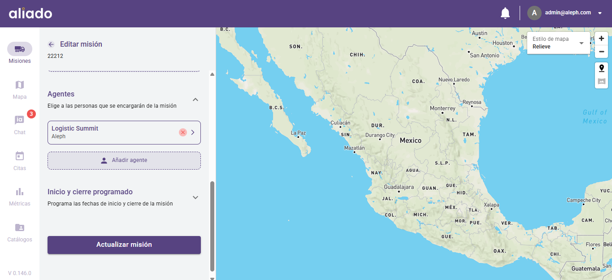 -
Inicio y Cierre programado: Primero asegúrese de tener un activo y un agente asignados, ya que sin estos no se permite guardar un inicio y cierre programado. Luego, en la sección “Inicio y Cierre del programa”, defina las nuevas fechas y horas.
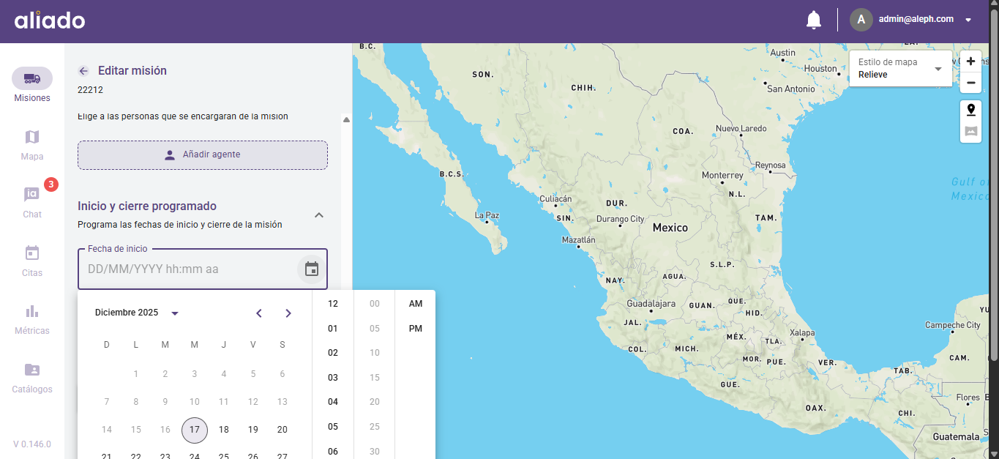 -
Una vez realizados todos los cambios, busque y haga clic en el botón "Actualizar misión" para guardar la nueva información.
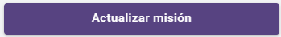
Geo Ruta
Asignación de Recursos y Tiempos
Finalizar Cambios
También podría interesarle: Crear Misión | Iniciar Misión | Cerrar Misión | Crear misión de Carga Masiva
¿Cómo iniar una misión?
Siga estos pasos para poner en marcha una misión ya creada:
-
Ubique su misión en el sistema. Puede utilizar el recuadro de "Búsqueda" e ingresar el ID de la misión, la organización o el lugar de origen.
-
Una vez localizada la misión, acerque el cursor a la fila correspondiente para habilitar los iconos de acción.
-
Haga clic en el icono de "Iniciar misión" para comenzar el seguimiento.
 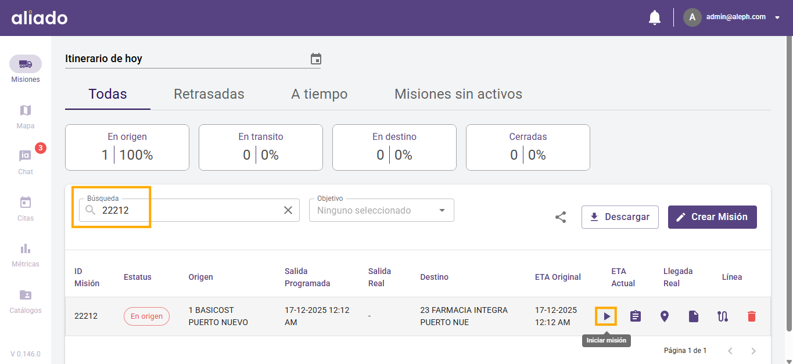
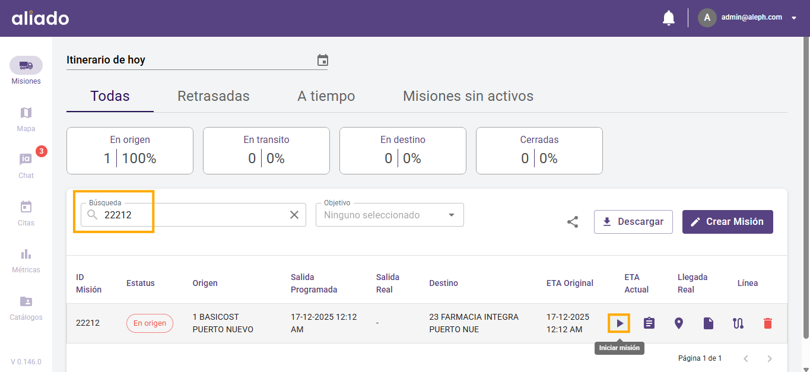
También podría interesarle Crear misión | Editar Misión | Cerrar Misión | Crear misión de Carga Masiva
¿Cómo cerrar una misión?
Siga estos pasos para cerrar una misión ya creada:
-
Ubique su misión en el sistema. Puede utilizar el recuadro de "Búsqueda" e ingresar el ID de la misión, la organización o el lugar de origen.
-
Una vez localizada la misión, acerque el cursor a la fila correspondiente para habilitar los iconos de acción.
-
Haga clic en el icono de "Cancelar" para cerrar la misión.
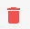 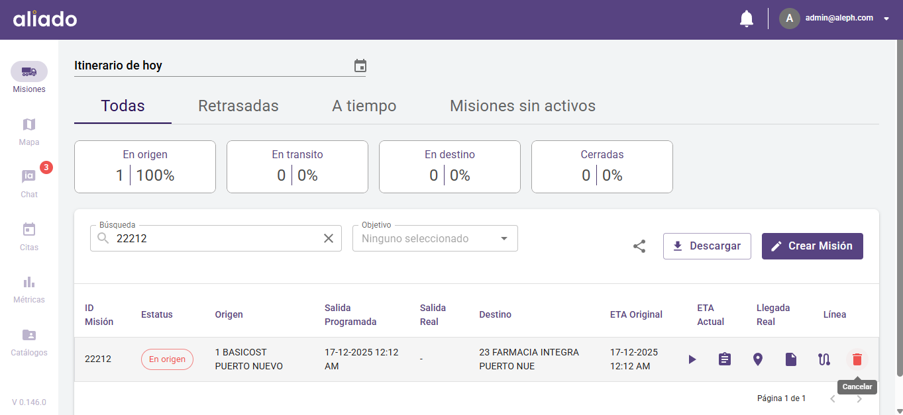
¿Cómo crear una misión de carga masiva?
Siga estos pasos para crear una nueva misión:
-
Seleccione el ícono de la sección "Misiones".
-
Haga clic en el botón de "Crear misión".
-
En el recuadro que aparece, seleccione la opción "Nueva carga masiva". 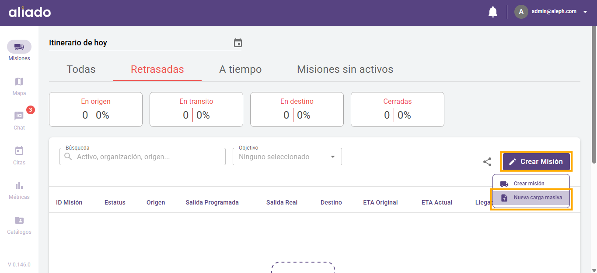
Nota: Si desea crear una misión normal, haga clic aquí.
-
Después tendrá que cargar el documento para su carga masiva, en la sección "Cargar documentos", los archivos permitidos son .xlsx, .csv.
Ya que haya subido su documento aparecera una vista previa del documento que utilizará, esto para que verifique si es el documento correcto.
-
Una vez que cargo y haya verificado que sea el archivo correcto, seleccione procesar archivo
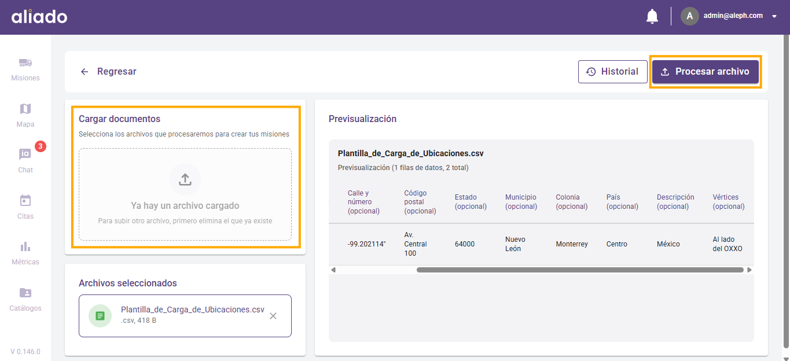Después de procesar el archivo, le aparecerá una pantallado donde se mostrará si existe algún error y el estado en el que se encuentré el archivo de la misión
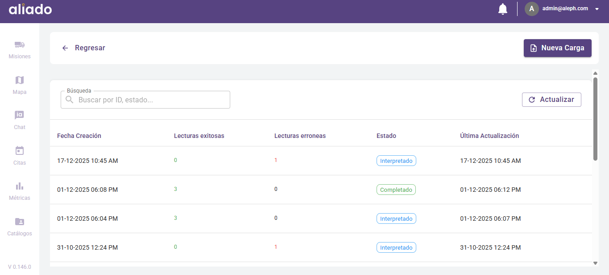Si su archivo cuenta con errores, podrá seleccionar cualquier apartado de la sección "estado" para poder visualizar los errores y poder corregirlos
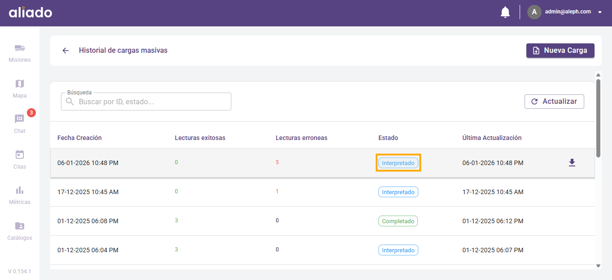 -
Una vez que lo mandó a la visualización de sus errores podrá modificarlos, seleccionando el apartado que desee
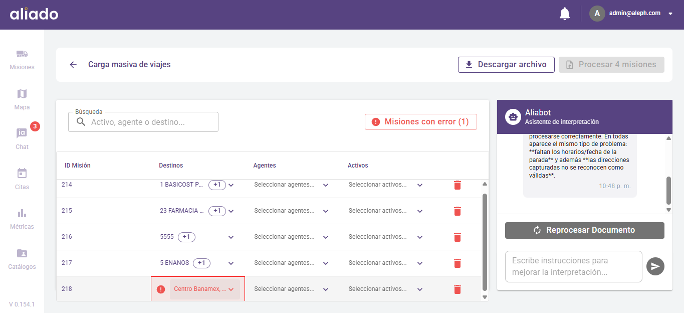Si desea cambiar el ID de su misión puede darle i clic al ID con el que ya cuenta y agregar el nuevo ID
Para cambiar/agregar destinos seleccione el destino de la misión deseada, se abrirá el apartado donde puede modificar el destino y "añadir un destino"
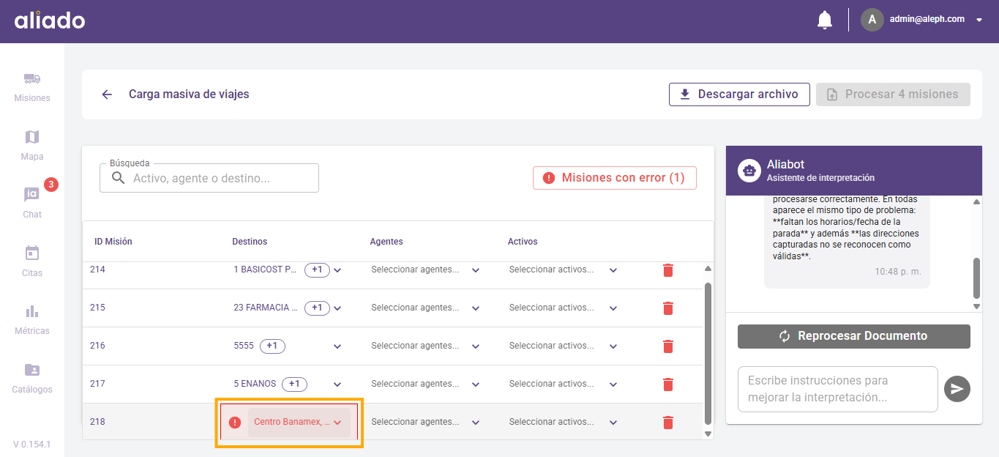Se abrirá el aparatado, donde le mostrará la lista de los destinos guardados, también podré modificar la fecha y hora programada de un destino ya existente o podrá agregar uno nuevo en la parte de "añadir destino"
De la misma forma puede agregar agentes, activos o eliminar una misión que se haya cargado
-
Una vez modificados lo errores, podrá procesar las misiones, le aparecerá un mensaje de confirmación, una vez que este seguro de que es correcta la información podrá darle clic al botoón "Sí, cargar misiones"
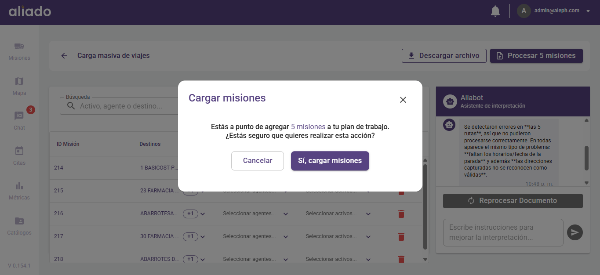 -
Podrá visualizar las misiones creadas en el apartado de misiones
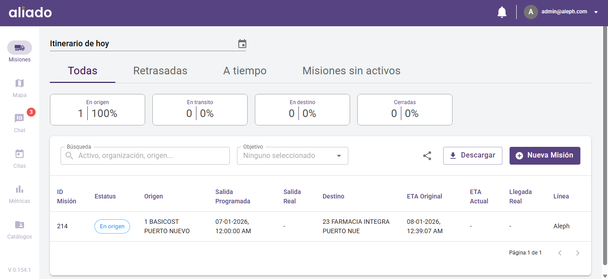
Control de accesos
¿Cómo crear una cita desde cero?
Siga estos pasos para crear una nueva misión:
-
Seleccione el ícono de la sección "Citas". 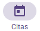
-
Haga clic en el botón de "Nueva Cita". 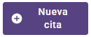
Nota: Si desea crear una cita por carga masiva, haga clic aquí.
-
En el recuadro que aparece seleccione "Crear desde cero"
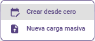 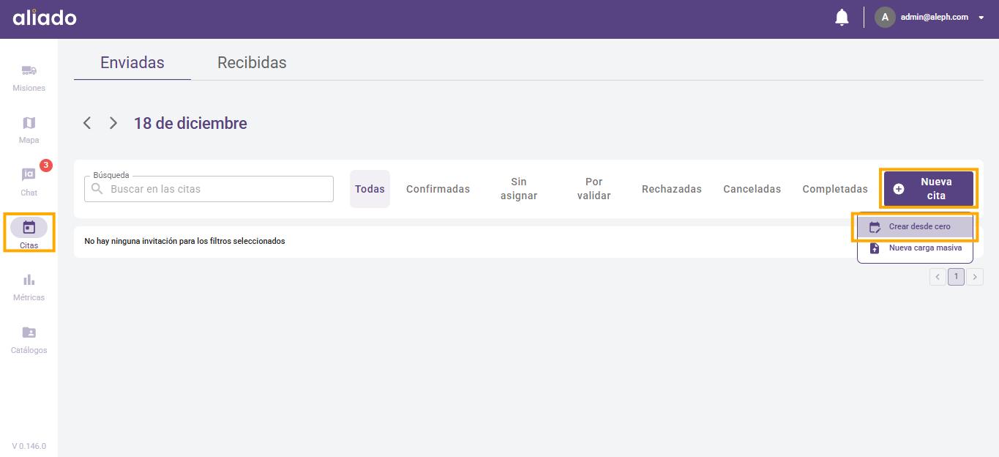 -
Tendrá que llenar el siguiente recuador, de acuerdo a sus necesidades
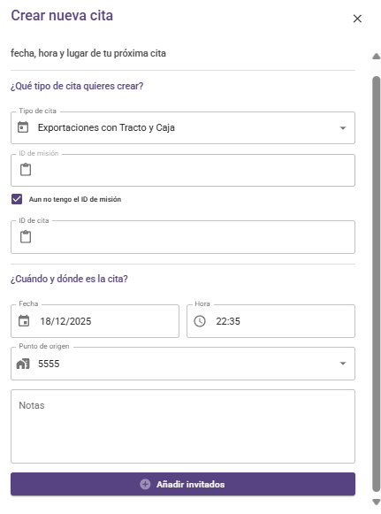 -
Posteriormente tendrá que seleccionar "Añadir invitados"
Eliga la organización que desee, y dele clic al boton enviar
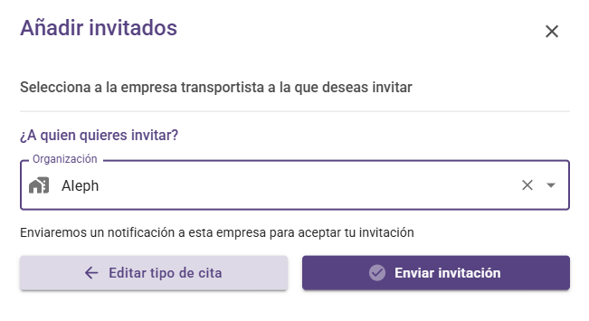 -
Una vez enviada la cita aparecerá esta imagén
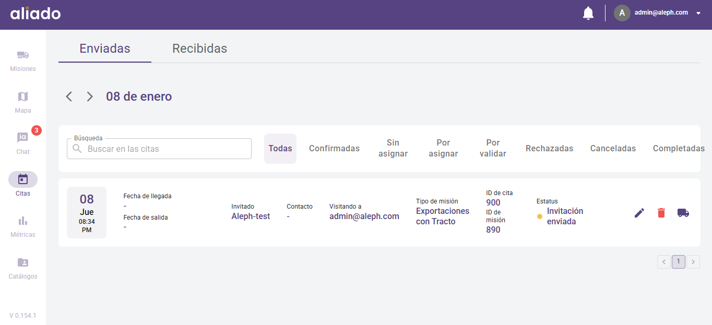El invitado le asignará un agente y activos
¿Cómo crear una cita de carga masiva?
-
Seleccione el ícono de la sección "Citas".
-
Haga clic en el botón de "Nueva Cita".
-
Elija la opción "Nueva cargar masiva"

-
Tendrá que subir el archivo que se ocupará para esta cita, aparecerá una vista previa del documento, esto para verificar si su archico es correcto
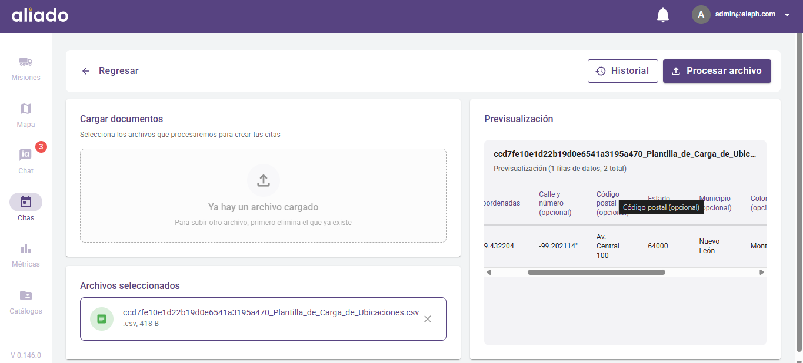Una vez que se haya verificado que es el archivo correcto, tendrá que seleccionar el botón "Procesar archivo"
-
Le mostrará la pantalla donde podrá ver si alguna de sus misiones tiene algún error y podrá cambiarlos eligiendo el estado de su misión
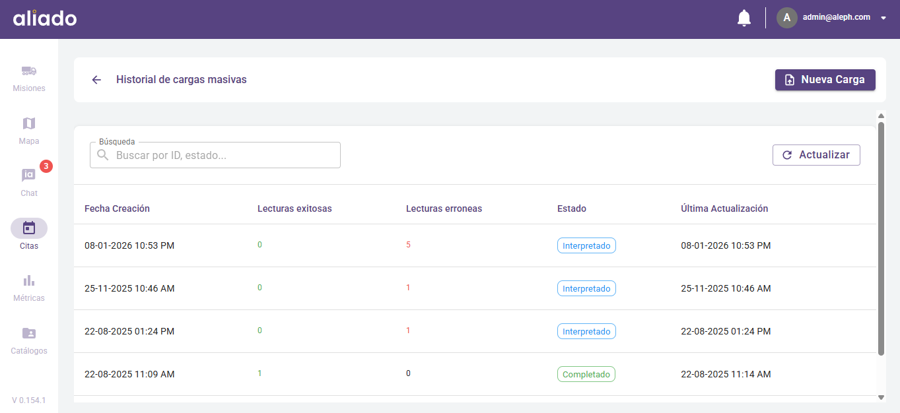Al elegir el estado de la misión, se mostrará la siguiente pantalla, donde le mostrará los errores que podrá cambiar.
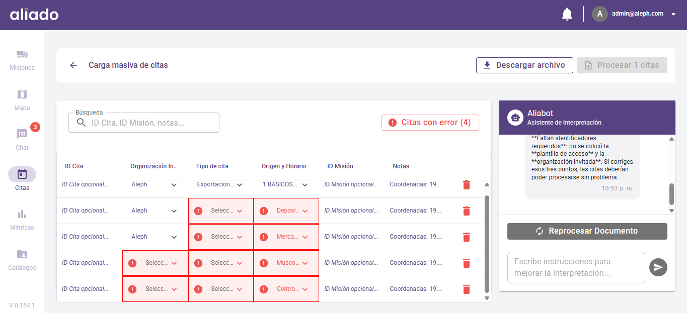 -
Una vez corregido los errores, seleccionará el botón procesar citas
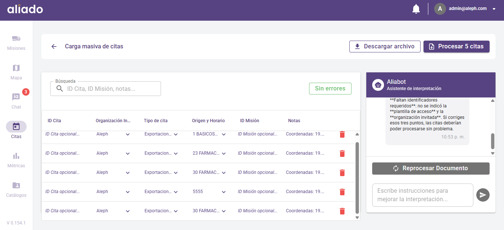Le aparecerá un mensaje de confirmación para subir todas las citas, ya que este seguro tendrá que elegir el boton Sí, cargar citas
hecho esto, sus citas apareceran en el apartado de citas
¿Cómo editar una cita ya creada?
-
Diríjase a la sección de citas y localice su cita programada, y elija el ícono del lápiz
-
Le aparecerá la misma pantalla que cuando crea una cita nueva, dirijase a los campos que quiera cambiar
¿Cómo eliminar una cita ya creada?
-
Diríjase a la sección de citas y localice su cita programada, y elija el ícono del bote de basura
-
Le aparecerá un mensaje de confirmación, cuando este seguro de que sea la cita que quiere eliminar, tendrá que darle clic al botón de Eliminar
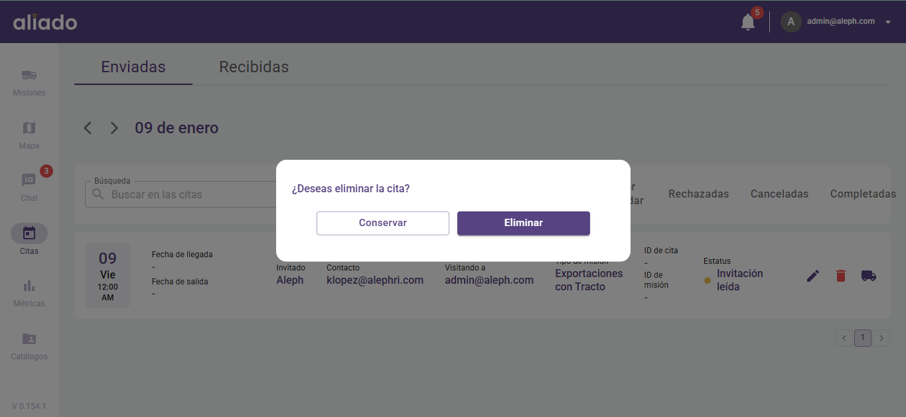
Despacho Digitalizado
¿Cómo se utiliza el Despacho Digitalizado?
-
Como primer paso debe de iniciar sesión, iniciada la sesión dirigirse a Escanear un viaje
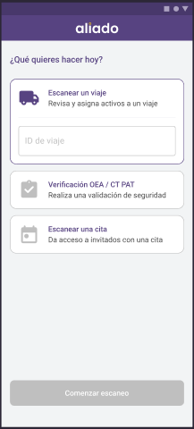 -
Coloque el ID de la misión que desee digitalizar
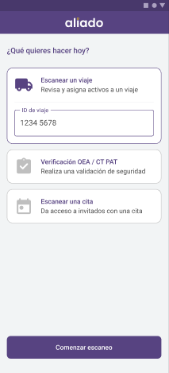Una vez localizada la misión, tendrá que darle clic al botón Comenzar escaneo
-
Añadirá el transporte que se encuentrán utilizando para la misión, escaneará el qr del transporte o lo puede añadir manualmente (si es de forma manual debe agregar la organización y el activo)
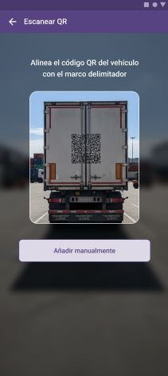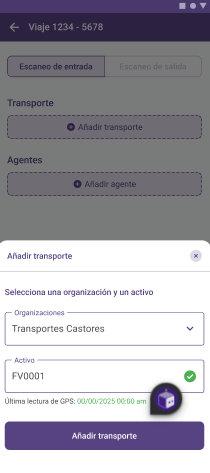Una vez escaneado el transporte que se utilizó podrá agregar los agentes que estén a cargo de la misión
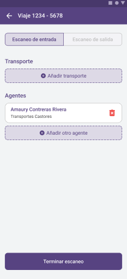 -
Ya que agrego los transportes correctos y los agentes de la misión, seleccione el botón terminar escaneo
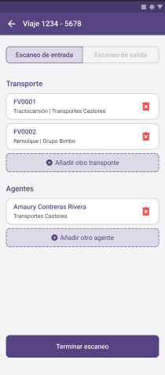
Tablero aeropuerto
¿Cómo se utiliza el Tablero aeropuerto?
-
Seleccione el ícono de la sección "Misiones".
-
Ubique su misión. Puede buscarla en el recuadro "Búsqueda" ingresando el ID de la misión, la organización o el origen.
-
Una vez ubicada, acerque el cursor a la misión para habilitar los íconos de acción y seleccione el ícono de Detalle.
-
Podrá visualizar el recorrido de su misión o iniciar una conversación
Vista Mapa
¿Cómo visualizar la vista del mapa?
-
Tendrá que ir a la sección del ícono mapa

-
En la siguiente pantalla podrá visualizar la misión que desee, colocando el ID de la misión y su estatus
Alertas neurálgicas
¿Cómo se utiliza Alertas neurálgicas?
-
En la sección de mapa, del lado derecho, hasta abajo, podrá encontrar el botón de mostrar/ocultar incidentes, estos ayudan a ver si puede tener ciertos restrasos en su camino o si es posible evitarlos con otra ruta
-
Si en el camino que se le muestra se encuentra algún inconveniente, podrá buscar una rula alterna
Tendrá que abrir su misión y buscar el ícono de "Ruta alternativa"
Le aparecerá la ruta que puede tomar
Bitácora digital de control misiones
¿Cómo se utiliza la Bitácora de control de misiones?
-
Seleccione el ícono de la sección "Misiones".
-
Ubique su misión. Puede buscarla en el recuadro "Búsqueda" ingresando el ID de la misión, la organización o el origen.
-
Una vez ubicada, acerque el cursor a la misión para habilitar los íconos de acción y seleccione el ícono de Detalle.
-
ya que se encuentra abierto el mapa de detalle, del lado izquiero logrará ver la Bitácora detallada
En está sección podrá visualizar los detalles como Paradas no autorizadas, si ya llego a algún destino, desvíos de rutas, etc. Puede buscar detalles especificos seleccionando la parte de eventos, así agilizará su busqueda.
Bitácora NOM087
¿Cómo se utiliza la Bitácora NOM087?
-
Seleccione el ícono de la sección "Misiones".
-
Ubique su misión. Puede buscarla en el recuadro "Búsqueda" ingresando el ID de la misión, la organización o el origen.
-
Una vez ubicada, acerque el cursor a la misión para habilitar los íconos de acción y seleccione el ícono de Detalle.
-
Ya que se encuentra abierto el mapa de detalle, del lado izquiero logrará ver la Bitácora detallada
-
Al darle clic a bitacora detallada se desplazará un cuadro que le permitirá seleccionar Bitácora NOM087, le mostrará todos los detalles de la misión
Alertas inteligentes
¿Cómo se utiliza Alertas inteligentes?
En la barra superior, del lado derecho se encuentra una campana, donde muestra si se tiene notificaciones
-
Dele clic a la pantalla y le mostrará las notificaciones nuevas que tenga
- Si selecciona la parte de ver más notificaciones, podrá ver todas sus notificaciones y dar una busqueda mas certera, ejemplo, si busca algúna fecha en especifico
-
Al abrir la pantalla de notificaciones completa, puede acerca el cursor a la notificación (a los 3 puntitos o al mapa), para obtener más detalle sobre esa notificación
Co-piloto de Inteligencia Artificial
¿Cómo se utiliza el Co-piloto de IA?
-
Seleccione el ícono de la sección "Misiones".
-
Una vez ubicada, acerque el cursor a la misión para habilitar los íconos de acción y seleccione el ícono de detalle.
-
Estando dentro de su misión, puede mencionar "Breiko Breiko" y darle las indicaciones que enviara a la torre de control
Ubique su misión. Puede buscarla en el recuadro "Búsqueda" ingresando el ID de la misión, la organización o el origen.
Esto evita que haya manipulación de tomar el celular y distraerse al manejar
Catálogo de Activos
¿Como visualizar el cátalogo ya existente
-
Diríjase al ícono de Cátalogos
-
En la siguiente pantalla podrá visualizar el cátalogo existente de Usuarios, Activos y Ubicaciones
¿Cómo crear un registro (usuarios, activos o ubicaciones)?
-
Diríjase al ícono de Cátalogos
-
Dependiendo lo que quiera agregar es a donde se tiene que dirigir, puede elegir "Usarios, activos o ubicación
-
Una vez que entro a la sección deseada, ubique el botón "Nuevo usuarios, Nuevo activo, Nueva ubicación"
-
Seleccione crear desde cero
-
Ingrese la información solicitada según sea el caso, una vez que haya verificado que los datos son correctos, dele clic al botón crear.
¿Cómo crear un registro (usuarios, activos o ubicaciones) de carga masiva?
-
Diríjase al ícono de Cátalogos
-
Dependiendo lo que quiera agregar es a donde se tiene que dirigir, puede elegir "Usarios, activos o ubicación
-
Una vez que entro a la sección deseada, ubique el botón "Nuevo usuarios, Nuevo activo, Nueva ubicación"
-
Seleccione nueva carga masiva
-
Le aparecerá la siguiente pantalla
Aquí podrá subir el archivo donde cuenta con todos los registros que desea subir, aparacerá una vista previa para visualizar su archivo, para que lo verifique y este seguro de que sea la información que desea agregar
-
Seleccione el botón procesar archivo
-
Tendrá que visualizar los que aparezcan en rojo y modificarlos hasta que sean correctos y se puedan procesar
- Id del colaborador
- Nombre Completo
- Rol
- Teléfono
- Unidad operativa (opcional)
- Fecha de ingreso
- Nombre de la ubicación
- Coordenadas de la localidad
- Calle y número
- Código postal
- Municipio
- Colonia
- País
- Descripción
Información que necesita su archivo
Para Carga masiva de usuarios
Para Carga masiva de ubicaciones
Métricas Inteligentes
¿Cómo visualizar las métricas?
-
Dirijase al ícono de métricas

-
Una vez que le haya mostrado la pantalla de métricas, puede colocar los parámetro que quiera visualizar, por ejemplo, período de tiempo del 4-10 de enero y la visualización sea diaria, y con ello ver las gráficas
Visibilidad controlada
¿Cómo utilizar la visibilidad controlada?
Esta función envía notificaciones automáticas a los clientes registrados para informarles cuando se programa un viaje hacia su destino. Para que se pueda enviar esa notificacón siga los siguientes pasos
-
Dirijase al ícono Misiones
-
Ya que este en la pantalla de misiones busque el ícono de compartir
-
Listo esto, dirijase a Agregar usuario, rellene el formulario que le aparezca y finalmente le tendrá que dar clic a Crear usuario